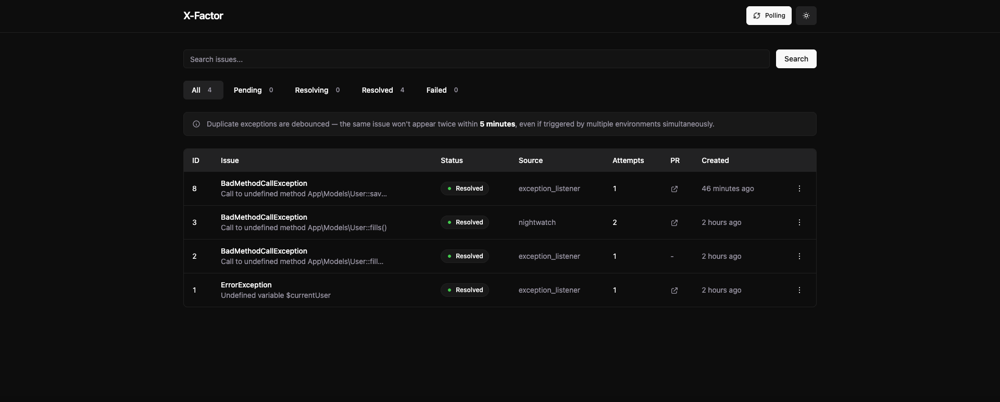
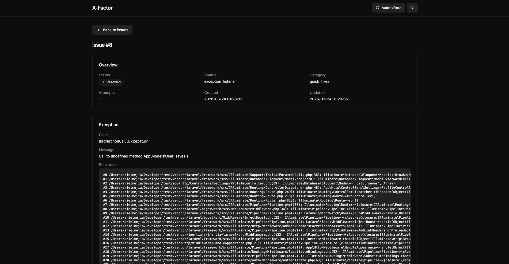
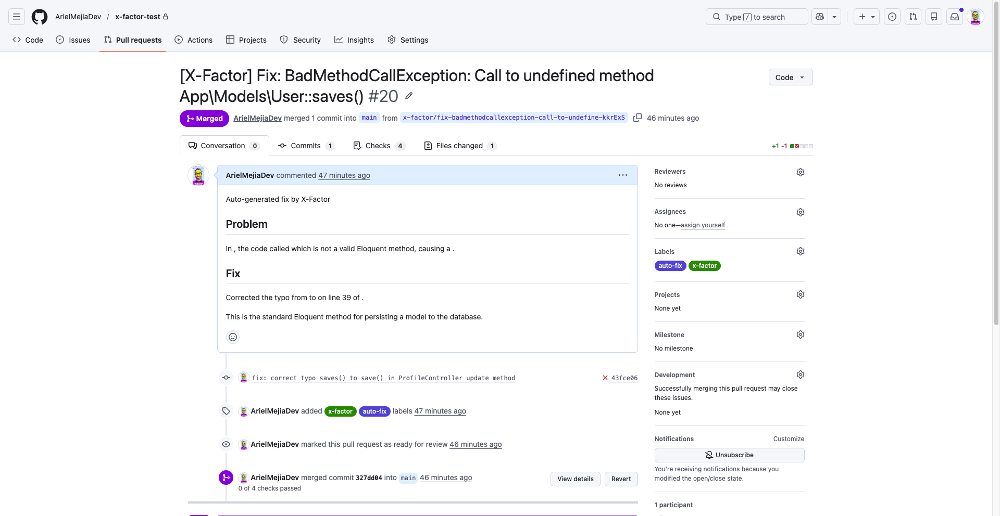

X-Factor catches production exceptions and automatically creates pull requests with AI-generated fixes. Install, configure, and let your app self-heal.
composer require arielmejiadev/x-factor
X-Factor is a drop-in Laravel package that transforms exceptions into actionable pull requests, powered by AI.
When an exception fires, X-Factor spins up an isolated git worktree, runs AI to fix the code, and opens a draft PR on your repo.
Use Claude Code or OpenCode as CLI drivers, or the Anthropic API driver directly. Full flexibility to match your stack.
3-layer dedup with fingerprinting, cache debounce, and database checks. The same exception never triggers duplicate work.
HMAC webhook verification, git worktree isolation, environment whitelisting, and no shell injection vectors.
Dark-themed web dashboard with search, status filters, PR links, retry actions, and real-time polling at /x-factor.
Customize AI behavior per exception type — different prompts, timeouts, models, and tools for quick fixes vs. complex bugs.
From exception to pull request in 8 automated steps. No human intervention required.
Your app throws an exception. X-Factor's listener or Nightwatch webhook captures it instantly.
A unique fingerprint is generated from the exception class, message, file, and line number.
3-layer check — cache debounce, database lookup, and status validation prevent duplicate work.
A new issue record is stored with full exception details, stack trace, and metadata.
A queued ResolveIssue job picks up the work asynchronously on your queue worker.
An isolated git worktree is created so AI operates on a clean copy — never touching production code.
Claude Code or OpenCode analyzes the exception and writes a targeted fix with full context.
A draft pull request is created on GitHub with the fix, ready for your team to review and merge.
A dark-themed dashboard to monitor, search, and retry every issue X-Factor processes.

Search, filter by status, view sources and PR links — all in one place.

Full exception overview, diagnostics, and stack trace for every captured issue.

AI writes the fix, opens a draft PR with a clear description, ready for review.
Plug X-Factor into your existing monitoring and AI setup. No lock-in.
Use Anthropic's Claude Code CLI as the AI driver to analyze exceptions and generate fixes.
Prefer OpenCode? Swap the CLI driver in your config and X-Factor handles the rest.
Connect via HMAC-signed webhooks. Nightwatch fires, X-Factor fixes. Zero effort.
Install the package, run the setup command, configure your .env, and you're done.
# Install the package composer require arielmejiadev/x-factor # Run the installer (publishes config, migration, and dashboard) php artisan x-factor:install # Run migrations php artisan migrate # Verify everything is configured php artisan x-factor:status
Catches all unhandled exceptions automatically.
X_FACTOR_MONITOR=exception_listener
Receives exceptions via Nightwatch's webhook.
X_FACTOR_MONITOR=nightwatch
X-Factor is free, open source, and ready for production Laravel apps.